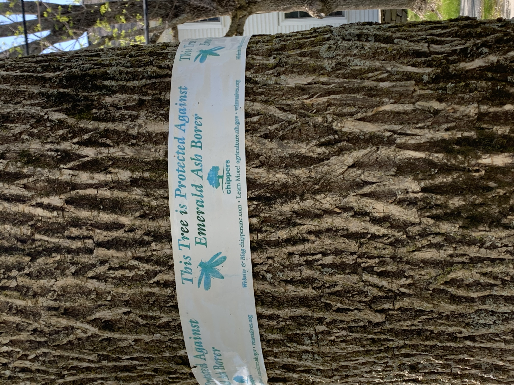

Invasive Species of Vermont
Vermont Invasive Species Map
Click to see Vermont Invasives :(
Click to show Biological Hotspots

Have you seen these signs before? This picture was taken on Dartmouth's campus! Tree's can be protected against Emerald Ash Borer.
Emerald Ash Borer High Risk Areas
References
All data came from
the Vermont Open Geodata Portal.
Biological Hotspot GeoJson Data
Invasive Species GeoJson Data
Data for EAB Risk Area ArcGIS Web Map
Images: